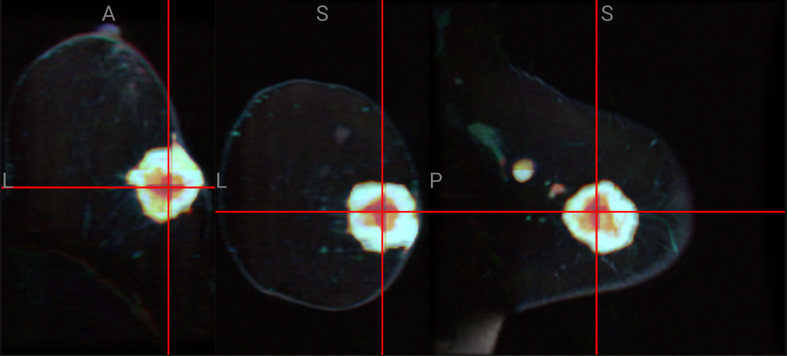

3D imaging AI
3D breast tumor segmentation
Interactive 3D viewer for breast MRI tumor segmentation on the publicly available ISPY cohort, using a standard 3D U-Net. Multi-planar slices, prediction vs ground-truth overlays, and per-subject MIP galleries across pre, peak, and post-contrast series.
- Adjustable overlay comparison: model prediction vs expert ground truth, with colormap selection.
- Morphometric readout per subject: longest diameter, volume, and sphericity.